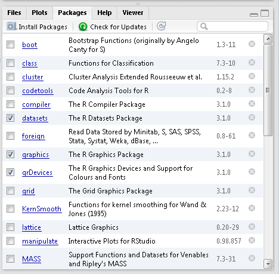
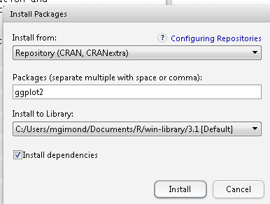
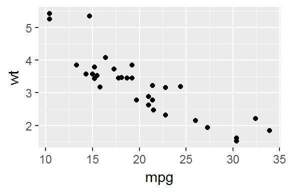

The R and RStudio Environments
Command line vs. script file
Command line
R can be run from a R console or RStudio command line environment. For example, we can assign four numbers to the object x then have R read out the values stored in x:
[1] 1 2 3 4R script files
If you intend on typing more than a few lines of code in a command prompt environment, or if you wish to save a series of commands as part of a project’s analysis, it is probably best that you write and store the commands in an R script file. Such a file is usually saved with a .R extension.
In RStudio, you can run a line of code of a R script file by placing a cursor anywhere on that line (while being careful not to highlight any subset of that line) and pressing the shortcut keys Ctrl+Enter on a Windows keyboard or Command+Enter on a Mac.
You can also run an entire block of code by selecting all lines to be run then pressing the shortcut keys Ctrl+Enter/Command+Enter. Or, you can run the entire R script by pressing Ctrl+Alt+R in Windows or Command+Option+R on a Mac.
In the following example, the R script file has three lines of code: two assignment operations and one regression analysis. The lines are run one at a time using the Ctrl+Enter keys and the output is displayed in the console window.

Example of a script environment
Project directory structure
If your project makes use of many data files, analysis scripts and/or presentation files (such as Word or PDF documents), it is strongly recommended that you create a directory structure under your root project folder to store and organize all of these files. For example, you might have a project folder located under D:\Jdoe\Project1 whose directory structure might look like this:

Project directory structure
Key elements of a project folder include: a Data/ folder that houses all data files (which include all raw data files downloaded from websites or provided by colleagues as well as all subsets and manipulated versions of these data files), an Analysis/ folder which houses all analysis files (e.g. R scripts, GIS map documents, Stata scripts, etc…) including figures or maps that may be produced by the analyses (such files could be saved in a sub-directory called Figures/), and a Presentation/ folder that stores final reports (e.g. .docx, .pdf, .Rmd files) and presentations (e.g. .pptx, .html files). Additionally, it is a good idea to save a README file at the root level of your directory that provides a description of the contents of the project folder as well as a synopsis of the project’s goals. Such file can be saved as a plain .txt file, a .docx file or a .md markdown file.
Understanding directory structures
Because a data file may reside in a different directory than that which houses the R script calling it, you need to explicitly instruct R on how to access that file from the R session’s working directory.
In the above example, user Jdoe has a project folder called Project1 in which reside a ./Data folder and an ./Analysis folder. He opens the R script called Data_manipulation.R which contains the following line of code:
He runs the line of code and R returns the following error message:
Error in file(file, "rt"): cannot open the connectionThe error message states that the file ACS.csv cannot be found. This is because the session’s working directory is probably set to a directory other than the D:/Jdoe/Project1/Data directory which houses the data file. An R session’s working directory can be verified by typing the following command:
[1] "D:/jdoe/Project1/Analysis"
The working directory is used to instruct R where to look for a file (or where to create one) if the directory path is not explicitly defined. So in the above example, user Jdoe is asking R to open the file ACS.csv without explicitly telling R in which directory to look so R is defaulting to the current working directory which is D:/jdoe/Project1/Analysis which does not contain the file ACS.csv.
There are two options to resolving this problem. The first is to set the working directory to the folder that contains the ACS.csv file using the setwd() function.
The second is to modify the read.csv call by specifying the path to the ACS.csv file.
However, this approach makes it difficult to share the project folder with someone else who may choose to place it under a different folder such as C:\User\John\Documents\Project1\. In such a scenario, the user would need to modify every R script that references the directory D:\Jdoe\Project1\. A better solution is to specify the location of the data folder relative to the location of the Analysis folder such as,
The two dots, .., tells R to move up the directory hierarchy relative to the current working directory. So in our working example, ../ tells R to move out of the Analysis/ folder and up into the Project1/ folder. The relative path ../Data/ACS.csv tells R to move out of the Analysis/ directory and over into the Data/ directory before attempting to read the contents of the ACS.csv data file.
Using relative paths makes your project folder independent of the full directory structure in which it resides thus facilitating the reproducibility of your work on a different computer or root directory environment.
Packages
One of R’s attractive features is its rich collection of packages designed for specific applications and techniques. Packages allow researchers and scientists to share R functions and data with other users. Some packages come already installed with R, others must be downloaded separately from a CRAN repository or other locations such as GitHub or personal websites.
Base packages
R comes installed with a set of default packages. A snapshot of a subset of the installed base packages is shown below:

Installing packages from CRAN
There are thousands of R packages to choose from. Most can be accessed from the CRAN repository. To install a CRAN package from within RStudio, click on the Packages tab, select Install and choose Repository (CRAN) as the source location. In the following example, the library ggplot2 is installed from CRAN.

Package installation from CRAN’s repository can also be accomplished using the following line of code:
The installation is usually straightforward and if any other packages need to be installed, RStudio will install those as well as long as the Install dependencies option is checked. In the previous example, ggplot2 requires that a dozen or so packages be present on your computer (such as RColorBrewer and reshape2)–all of which are automatically installed by RStudio.
Note that R packages are installed in the user’s home directory (C:/Users/…) by default. This is advantageous in that you do not need to have administrative privileges to install any packages. But it can be a disadvantage in that if someone else logs on to the same computer where you installed a package, that person will not have access to it requiring that she install that package in her home directory thereby duplicating an instance of that same package on the same computer.
Installing packages from GitHub
Some packages may be in development and deemed not mature enough to reside on the CRAN repository. Such packages are often found on GitHub–a website that hosts software projects. Installing a package from GitHub requires the use of another package called devtools available on CRAN.
For example, to install the latest version of ggplot2 from GitHub (i.e. the developmental version and not the stable version available on CRAN) type the following:
install.packages("devtools") # Install the devtools package if not already present
library(devtools) # Load the devtools package in the current R session
install_github("tidyverse/ggplot2")The argument tidyverse points to the name of the repository and ggplot2 to the name of the package.
Using a package in a R session
Just because a package is installed on your computer (in your home directory or in a directory accessible to you) does not mean that you have access to its functions. For example, after installing the ggplot2 library you might want to use one of its functions, qplot, to generate a scatter plot,
only to see the following error message:
Error in qplot(mpg, wt, data = mtcars): could not find function "qplot"This is because the contents of the ggplot2 package have not been loaded into the current R session. To make the functions and/or data of a package available to an existing R session, you must load its content using the library() function:
Once the package is loaded in the current R session, you should have full access to its functions and datasets.

Getting a session’s info
Reproducibility is a fundamental idea behind an open source analysis environment such as R. So it’s only fitting that all aspects of your analysis environment be made available (along with your data and analysis results). This is because functions and programming environments may change in their behavior as versions evolve; this may be by design or the result of a bug in the code fixed in later versions. No piece of software, open-source or commercial, is immune to this. It’s therefore important that you publicize the R session used in your analysis. A simple way to do this is to call the sessionInfo() function.
R version 4.0.3 (2020-10-10)
Platform: x86_64-w64-mingw32/x64 (64-bit)
Running under: Windows 10 x64 (build 19041)
Matrix products: default
locale:
[1] LC_COLLATE=English_United States.1252 LC_CTYPE=English_United States.1252 LC_MONETARY=English_United States.1252
[4] LC_NUMERIC=C LC_TIME=English_United States.1252
attached base packages:
[1] stats graphics grDevices utils datasets methods base
other attached packages:
[1] ggplot2_3.3.3 magrittr_2.0.1
loaded via a namespace (and not attached):
[1] tidyselect_1.1.0 xfun_0.20 remotes_2.2.0 purrr_0.3.4 pander_0.6.3 colorspace_2.0-0
[7] vctrs_0.3.6 generics_0.1.0 testthat_3.0.1 usethis_2.0.0 htmltools_0.5.1.1 viridisLite_0.3.0
[13] yaml_2.2.1 rlang_0.4.10 pkgbuild_1.2.0 pillar_1.4.7 glue_1.4.2 withr_2.4.1
[19] sessioninfo_1.1.1 lifecycle_0.2.0 stringr_1.4.0 gtable_0.3.0 munsell_0.5.0 rvest_0.3.6
[25] devtools_2.3.2 codetools_0.2-16 kableExtra_1.3.1 memoise_2.0.0 evaluate_0.14 labeling_0.4.2
[31] knitr_1.31 callr_3.5.1 fastmap_1.1.0 ps_1.5.0 highr_0.8 Rcpp_1.0.5
[37] scales_1.1.1 cachem_1.0.1 desc_1.2.0 pkgload_1.1.0 webshot_0.5.2 farver_2.0.3
[43] fs_1.5.0 digest_0.6.27 stringi_1.5.3 processx_3.4.5 dplyr_1.0.2 grid_4.0.3
[49] rprojroot_2.0.2 cli_2.3.0 tools_4.0.3 tibble_3.0.6 crayon_1.4.0 pkgconfig_2.0.3
[55] ellipsis_0.3.1 xml2_1.3.2 prettyunits_1.1.1 assertthat_0.2.1 rmarkdown_2.6 httr_1.4.2
[61] rstudioapi_0.13 R6_2.5.0 compiler_4.0.3 Output includes all loaded base packages and external packages (e.g. ggplot2 in this working example) as well as their version.
 Manny Gimond (2021)
Manny Gimond (2021)